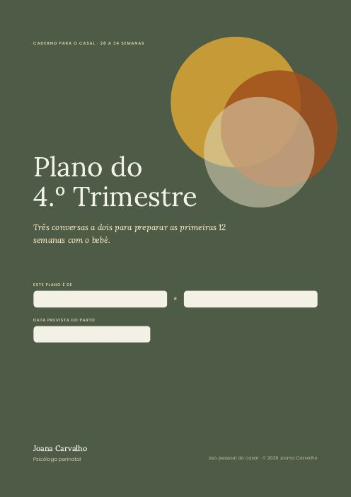

Lançamento do Plano do 4.º Trimestre
Tudo o que é preciso para lançar o caderno a Jan 11, 2027: os guiões dos áudios, os emails, o conteúdo de aquecimento e a checklist técnica.
O caderno
O Plano do 4.º Trimestre em PDF, com a paleta Aproximar: 13 páginas, três conversas, página para o frigorífico e frases para as visitas. É este o ficheiro que se entrega depois da compra.

Descarregar o caderno Abrir
Plano de ação de A a Z
São 32 passos, de hoje até ao balanço em fevereiro, por ordem. O trabalho pesado fica em novembro e na primeira quinzena de dezembro. A partir de 15 de dezembro, a lista de espera e o conteúdo agendado trabalham sozinhos.
A · Decidir (até 31 de outubro)
B · Acabar o produto (novembro)
C · Montar a parte técnica (até 5 de dezembro)
D · Preparar o conteúdo (1 a 14 de dezembro)
E · Aquecer (15 de dezembro a 7 de janeiro)
F · Testar (até 8 de janeiro)
G · Lançar (11 a 14 de janeiro)
Z · Depois do lançamento (15 de janeiro a fevereiro)
Calendário do lançamento
O trabalho concentra-se em novembro e na primeira quinzena de dezembro. A lista de espera e o conteúdo agendado trabalham sozinhos durante a pausa de Natal, e as vendas abrem a 11 de janeiro.
Guiões dos três áudios
Cada guião tem cerca de 500 palavras, o que dá 4 a 5 minutos a um ritmo calmo. Grava no telemóvel, num quarto com cortinas ou almofadas, e lê como se falasses com um casal à tua frente. As pausas marcadas com (pausa) são de dois segundos.
Áudio 1 · Imaginar
Olá. Sou a Joana, psicóloga perinatal, e vou acompanhar-vos nestas três conversas.
Antes de abrirem o caderno, queria pedir-vos uma coisa simples: sentem-se juntos, num sítio confortável, e pousem os telemóveis longe. (pausa) Este tempo é só vosso.
Provavelmente já prepararam muita coisa: o quarto, a roupa, a mala para a maternidade. É natural. O que quase ninguém prepara são as primeiras semanas em casa, com o bebé. E é aí que a maioria dos casais sente mais o peso.
Chamamos a este período o 4.º trimestre. As primeiras doze semanas depois do parto são, para o bebé, uma continuação da gravidez: ele ainda precisa de estar quase sempre perto, ao colo, a ouvir a vossa voz. Acordar de poucas em poucas horas não é um problema a resolver. É o que um recém-nascido faz.
Para a mãe, é tempo de recuperação, de corpo e de emoções. Para o pai ou parceiro, é também uma mudança de identidade, muitas vezes sem espaço para ser falada. E para o casal, é uma fase com menos sono, menos tempo e mais decisões. (pausa) Discutir mais nesta fase é esperado. Não quer dizer que algo esteja errado.
Hoje não vão decidir nada. Hoje vão imaginar. No caderno, há algumas perguntas: como imaginam um dia normal com o bebé, o que vos entusiasma, o que receiam. Respondam primeiro cada um sozinho, e só depois partilhem.
Quando ouvirem algo inesperado do outro, experimentem uma frase: "conta-me mais". (pausa) A curiosidade abre conversas que a pressa fecha.
Não há respostas certas. Há as vossas. E é nas diferenças entre as vossas respostas que estão as conversas mais importantes.
No fim, escolham juntos uma frase para este tempo, um lema. Pode ser simples: "devagar e juntos". E marquem já a data da próxima conversa.
Boa conversa. Estou convosco.
Áudio 2 · Organizar
Olá outra vez. Hoje é a conversa mais prática das três, e talvez a que mais vos vai poupar nas primeiras semanas.
Comecem por respirar juntos três vezes, devagar. (pausa) Inspirem pelo nariz, e soltem o ar mais devagar do que entrou. (pausa)
Vamos falar de quatro coisas: a rede de apoio, quem faz o quê, as noites e as visitas.
Primeiro, a rede. Quase toda a gente quer ajudar, mas pouca gente sabe como. "Se precisarem de alguma coisa, digam" é uma frase bonita que raramente resulta. O que resulta é um pedido concreto: "podes trazer-nos uma sopa à quinta-feira?". No caderno, escrevam nomes e tarefas. E se a vossa rede é pequena, não estão sozinhos: muitas famílias vivem longe da sua aldeia. Pensem também no que podem pagar ou pedir fora da família.
Depois, quem faz o quê. Nas primeiras semanas, a mãe recupera e alimenta o bebé. Quase todo o resto deve passar para o outro adulto e para a rede. Dividam tarefas inteiras: quem tem a tarefa também se lembra dela. Porque além de fazer, alguém tem de pensar, planear e lembrar. Isso chama-se carga mental, e pesa tanto como o resto.
As noites. O sono é o que mais protege o humor dos dois. O objetivo é que cada um tenha, sempre que possível, um bloco de quatro a cinco horas seguidas. Combinem turnos. Não precisa de ser perfeito; precisa de existir.
E as visitas. Combinem as regras agora, para não terem de as inventar à porta, cansados. Escolham quem faz de porteiro. Às vezes é mais fácil ser o pai ou o parceiro a dizer "hoje não".
(pausa) Uma última coisa. Combinem que qualquer forma de alimentar o bebé com amor é uma boa forma. Isso tira muito peso de cima de muitas mães.
Boa conversa.
Áudio 3 · Cuidar
Olá. Esta é a última conversa, e talvez a mais delicada. Hoje vamos falar de cuidar: do corpo, da saúde mental e do vosso casal.
Sentem-se perto um do outro. (pausa) Se quiserem, deem a mão.
A recuperação de um parto leva semanas, às vezes meses. Marquem a consulta de revisão do puerpério e pensem numa avaliação do pavimento pélvico. Depois de uma cesariana, a mãe não deve carregar pesos. Isto também é plano.
Agora, a saúde mental. Muitas mães têm, na primeira semana, dias de choro e de sensibilidade. Chama-se baby blues e costuma passar sozinho até às duas semanas. Mas se a tristeza, a irritação, a ansiedade ou a culpa não passarem, ou se deixarem de conseguir dormir mesmo quando podem, é tempo de pedir ajuda. Isto vale para a mãe e vale para o pai. A depressão no pai existe, e muitas vezes aparece como irritação ou afastamento.
(pausa) E se algum de vocês tiver pensamentos de morrer, de se magoar ou de fazer mal ao bebé, procurem ajuda no mesmo dia. Liguem 112 ou SNS 24. Pedir ajuda não é falhar. É cuidar da família.
No caderno, há uma tabela para cada um escrever: quais são os meus sinais de que não estou bem, o que me ajuda, o que não me ajuda. Escrevam com honestidade. É um presente que dão ao outro.
Por fim, o vosso casal. Com um bebé em casa, o casal só se encontra se marcar encontro. Proponho-vos dez minutos por semana, sem telemóveis, com quatro perguntas simples. Escolham já o dia e a hora.
(pausa) Não vão fazer tudo como planearam. E ainda bem. O plano não é uma promessa. É a conversa que tiveram para chegar lá juntos.
Foi um gosto acompanhar-vos. Boa viagem pelo 4.º trimestre.
Emails da lista de espera e do lançamento
Seis emails: um de boas-vindas com o isco, três de aquecimento e três de vendas. Assinados sempre como Joana, escritos como uma conversa.
| # | Quando | Assunto | Objetivo |
|---|---|---|---|
| 1 | Logo após a inscrição | As vossas frases para as visitas | Entregar o isco e criar relação |
| 2 | 2 dias depois | O que ninguém vos diz sobre o 4.º trimestre | Ensinar o conceito |
| 3 | 5 dias depois | A discussão das três da manhã | Mostrar o problema com uma história |
| 4 | 11 de janeiro, 9h | Abriu: Plano do 4.º Trimestre a 15 € | Abrir as vendas com preço de lançamento |
| 5 | 13 de janeiro, 9h | Duas perguntas que recebi | Responder a objeções |
| 6 | 14 de janeiro, 18h | Últimas horas a 15 € | Fechar o preço de lançamento |
Email 1 · As vossas frases para as visitas
Olá,
Obrigada por se juntarem à lista de espera. Como prometido, aqui está o guia Visitas sem culpa, com frases prontas para o grupo da família, para a porta e para os conselhos que ninguém pediu.
[Descarregar o guia]
Uma sugestão: leiam-no a dois e escolham quem vai fazer de "porteiro" nas primeiras semanas. É uma conversa de cinco minutos que poupa muitas tardes cansadas.
Nos próximos dias vou partilhar convosco algumas ideias sobre o 4.º trimestre, as doze semanas depois do parto que quase ninguém prepara.
Até já, Joana
Email 2 · O que ninguém vos diz sobre o 4.º trimestre
Olá,
Sabiam que muitos especialistas chamam às primeiras doze semanas depois do parto o "4.º trimestre"? A ideia é simples: para o bebé, esse tempo é uma continuação da gravidez. Ele precisa de colo, de voz, de movimento, quase sempre.
Isto muda as expectativas. Um bebé que só dorme ao colo não tem "maus hábitos". Está a fazer exatamente o que um recém-nascido faz.
Para a mãe, é tempo de recuperação. Para o pai ou parceiro, de mudança de identidade. E para o casal, de muito menos sono e muito menos tempo a dois.
Não há forma de tornar o 4.º trimestre fácil. Mas há forma de o tornar mais leve: combinar o essencial antes de o bebé chegar.
No próximo email, conto-vos a conversa que mais vejo faltar aos casais.
Joana
Email 3 · A discussão das três da manhã
Olá,
São três da manhã. O bebé chora pela terceira vez. Um dos dois levanta-se, e o outro finge que dorme. No dia seguinte ninguém diz nada, mas os dois estão zangados.
Esta cena repete-se em muitas casas, e quase nunca é sobre o bebé. É sobre aquilo que ninguém combinou: quem acorda, quem descansa, quem trata do resto. Quando não se combina, decide-se no pior momento: cansados, às escuras, sem paciência.
O sono é o que mais protege o humor dos dois. E um plano simples de turnos, falado com calma durante a gravidez, pode ser a diferença entre uma noite difícil e uma semana de discussões.
É exatamente isso que trabalho no Plano do 4.º Trimestre: três conversas a dois para chegarem às primeiras semanas com as decisões difíceis já tomadas. Abre a 11 de janeiro, e vocês, na lista de espera, ficam a saber primeiro.
Joana
Email 4 · Abriu: Plano do 4.º Trimestre a 15 €
Olá,
O Plano do 4.º Trimestre está disponível. E como estão na lista de espera, durante 72 horas fica a 15 € em vez de 19 €.
O que recebem:
- Um caderno de 13 páginas, preenchível no computador ou no tablet
- Três áudios de 5 minutos, um para abrir cada conversa
- Uma página para o frigorífico, com contactos, noites e sinais de alerta
- As frases para as visitas, que já conhecem
São três conversas de 45 minutos, entre as 28 e as 34 semanas. No fim, terão um plano para a rede de apoio, as tarefas, as noites, as visitas e o vosso casal.
[Quero o plano a 15 €]
O preço de lançamento termina na quinta-feira, 14 de janeiro, à meia-noite.
Joana
Email 5 · Duas perguntas que recebi
Olá,
Desde segunda-feira recebi duas perguntas muitas vezes. Respondo aqui, para quem ainda está a pensar.
"Já fizemos o curso de preparação para o parto. Não é a mesma coisa?" Não. Os cursos preparam o parto e os cuidados ao bebé. O caderno prepara o que vem depois para vocês os dois: a organização, o descanso, as visitas e a relação.
"E se o meu parceiro não quiser fazer?" Comecem pela conversa 1, a mais leve, e ouçam o primeiro áudio juntos. É curto e costuma abrir a porta. Se forem pais a solo, façam o caderno com a pessoa que mais vai estar presente.
[Quero o plano a 15 €]
Joana
Email 6 · Últimas horas a 15 €
Olá,
Só para avisar: o preço de lançamento termina hoje à meia-noite. A partir de amanhã, o Plano do 4.º Trimestre passa a 19 €.
Se estão entre as 28 e as 34 semanas, este é um bom momento para começar a primeira conversa.
[Quero o plano a 15 €]
E se não for agora, está tudo bem. Continuo por aqui.
Joana
Emails depois da compra
Quatro emails que acompanham as três conversas. Servem para que o caderno seja usado, não só descarregado, e no fim apresentam o Mães que Sustentam e as consultas.
| # | Quando | Assunto |
|---|---|---|
| 1 | Logo após a compra | O vosso Plano do 4.º Trimestre |
| 2 | 3 dias depois | Já marcaram a primeira conversa? |
| 3 | 10 dias depois | A conversa das noites |
| 4 | 21 dias depois | Depois do plano |
Email 1 · O vosso Plano do 4.º Trimestre
Olá,
Obrigada pela confiança. Aqui está tudo o que precisam:
- [Caderno PDF preenchível] Abram no Adobe Reader, na Pré-visualização do Mac ou no tablet para escrever nos campos.
- [Áudio 1 · Imaginar]
- [Áudio 2 · Organizar]
- [Áudio 3 · Cuidar]
Como começar: escolham um momento calmo esta semana, ouçam o áudio 1 juntos e façam a primeira conversa. São 45 minutos. Depois marquem logo a data da segunda.
Se tiverem alguma dúvida, respondam a este email. Leio todos.
Joana
Email 2 · Já marcaram a primeira conversa?
Olá,
Só um lembrete gentil: o mais difícil é começar. Se ainda não fizeram a primeira conversa, escolham agora um dia e uma hora, e ponham no calendário dos dois.
Uma dica: na primeira conversa, respondam primeiro cada um sozinho. As diferenças entre as vossas respostas são o melhor da conversa.
Joana
Email 3 · A conversa das noites
Olá,
Se já estão na segunda conversa, há uma parte que vale a pena não saltar: o plano das noites.
O objetivo é que cada um tenha, sempre que possível, um bloco de 4 a 5 horas seguidas de sono. Não precisa de ser perfeito. Precisa de existir, para que às três da manhã ninguém tenha de negociar.
Depois de o preencherem, copiem-no para a página do frigorífico.
Joana
Email 4 · Depois do plano
Olá,
Espero que as conversas vos tenham aproximado. Se ainda falta a terceira, não a deixem para a última semana: é a que fala dos sinais de alerta e do vosso casal.
O plano termina aqui, mas o caminho continua. Se quiserem companhia nas primeiras semanas, há duas formas:
- Mães que Sustentam, um programa em grupo com caminhadas, oficinas e encontros com outras mães e bebés.
- Consultas de psicologia perinatal, individuais ou de casal, online ou presenciais.
[Saber mais]
E lembrem-se: se a gravidez ou o pós-parto estiverem a ser difíceis, pedir ajuda cedo faz toda a diferença.
Um abraço, e boa viagem pelo 4.º trimestre, Joana
Conteúdo de aquecimento para o Instagram
Catorze publicações entre 15 de dezembro e 14 de janeiro. Como as duas últimas semanas de dezembro são de pausa, tudo fica gravado e agendado na primeira quinzena de dezembro.
| Data | Formato | Tema | Chamada |
|---|---|---|---|
| 15 dez | Carrossel | O que é o 4.º trimestre, em 6 slides | Lista de espera: frases para as visitas, grátis |
| 17 dez | Reel | "Preparaste o quarto. Preparaste as noites?" | Lista de espera |
| 19 dez | Stories | Caixa de perguntas: o que mais vos assusta no pós-parto? | Responder |
| 22 dez | Carrossel | 5 frases para dizer "agora não" às visitas | Guia completo na lista de espera |
| 26 dez | Reel | Baby blues ou algo mais? Os sinais | Guardar e partilhar |
| 29 dez | Carrossel | Quem faz o quê: a carga mental invisível | Lista de espera |
| 2 jan | Stories | Sondagem: já combinaram quem acorda de noite? | Responder |
| 5 jan | Reel | A discussão das três da manhã | Lista de espera |
| 7 jan | Carrossel | Por dentro do caderno: as três conversas | Abre segunda-feira |
| 9 jan | Stories | Contagem decrescente e os bastidores da gravação dos áudios | Ativar lembrete |
| 11 jan | Reel e stories | Abriu: Plano do 4.º Trimestre | Link na bio, 15 € por 72 horas |
| 12 jan | Carrossel | Para quem é, e para quem não é | Link na bio |
| 13 jan | Stories | Respostas às perguntas que recebi | Link na bio |
| 14 jan | Stories | Últimas horas a 15 € | Link na bio |
Antes de publicar: confirma no Código Deontológico da OPP o que podes usar em publicidade, sobretudo testemunhos. Nos conteúdos clínicos, como o dos sinais de alerta, deixa sempre o contacto do SNS 24.
Checklist técnica antes de abrir as vendas
Tudo isto tem de estar testado até 8 de janeiro, com uma compra real feita por ti.
Produto
Venda e entrega
Faturação e legal
Emails